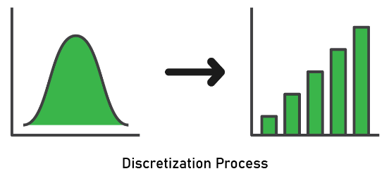
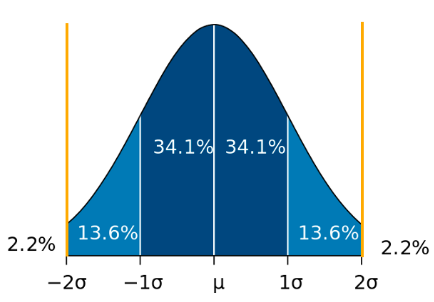

# Bining
import pandas as pd
import plotly.express as px
import numpy as np
# Load Data
df = pd.read_csv('data_sampled_100.csv')
# binning data menjadi 5 kategori
df['loudness'] = pd.cut(df['loudness'], bins=3, labels=[
'sunyi', 'standar', 'bising'])
# urutkan data berdasarkan fitur loudness
df_sorted = df.sort_values(by='loudness')
# visualisasikan data menggunakan histogram
fig = px.histogram(df_sorted, x='loudness')
fig.show()6 Cleaning Data
6.1 Data Cleaning
Pada proses machine learning, terdapat tahapan preprocessing. Preprocessing merupakan tahapan yang penting dalam machine learning. Hasil dari preprocessing dapat mempengaruhi nilai akurasi dari sebuah model. Tujuan dari Preprocessing adalah untuk memastikan data siap untuk diproses dan atau digunakan pada machine learning. Dalam melakukan preprocessing memiliki beberapa tantangan, diantara adalah missing value, outlier, format tidak konsisten, dan malformed record
6.2 Cara Mengatasi Missing Value
- Mising Value merupakan data yang kosong atau tidak lengkap.
- Tantangan dalam mengatasi missing value adalah bagaimana mengisi nilai kosong tersebut.
- Strategi yang dapat dilakukan diantara lain :
- Menghapus baris atau kolom yang memiliki missing value
- Mengisi nilai kosong dengan nilai rata-rata atau median
- Mengisi nilai kosong dengan nilai yang sering muncul
Pilih strategi yang paling sesuai tergantung pada tipe data dan tujuan analisis
6.2.1 Menghapus baris atau kolom yang memiliki missing value
6.2.1.1 Tanpa Menggunakan Dataset
import pandas as pd
# Contoh dataset dengan nilai yang hilang
data = {
'A': [1, 2, None, 4],
'B': [5, None, 7, 8],
'C': [9, 10, 11, None]
}
df = pd.DataFrame(data)
# Tampilkan dataset sebelum penghapusan
print("Dataset sebelum penghapusan:")
print(df)
# Hapus baris yang memiliki nilai yang hilang
df_cleaned_rows = df.dropna()
print("\nDataset setelah menghapus baris yang memiliki nilai yang hilang:")
print(df_cleaned_rows)
# Hapus kolom yang memiliki nilai yang hilang
df_cleaned_cols = df.dropna(axis=1)
print("\nDataset setelah menghapus kolom yang memiliki nilai yang hilang:")
print(df_cleaned_cols)6.2.1.2 Menggunakan Dataset
untuk mengunduh dataset agar dapat digunakan pada source code disini
import pandas as pd
# Load dataset Titanic dari file CSV
titanic_df = pd.read_csv("titanic.csv")
# Tampilkan informasi mengenai dataset, termasuk jumlah nilai yang hilang di setiap kolom
print("Informasi tentang dataset Titanic:")
print(titanic_df.info())
# Hapus baris yang memiliki nilai yang hilang
titanic_cleaned_rows = titanic_df.dropna()
print("\nDataset Titanic setelah menghapus baris yang memiliki nilai yang hilang:")
print(titanic_cleaned_rows)
# Hapus kolom yang memiliki nilai yang hilang
titanic_cleaned_cols = titanic_df.dropna(axis=1)
print("\nDataset Titanic setelah menghapus kolom yang memiliki nilai yang hilang:")
print(titanic_cleaned_cols)6.2.2 Mengisi nilai kosong dengan nilai rata-rata atau median
import pandas as pd
# Load dataset Titanic dari file CSV
titanic_df = pd.read_csv("titanic.csv")
# Tampilkan informasi mengenai dataset, termasuk jumlah nilai yang hilang di setiap kolom
print("Informasi tentang dataset Titanic sebelum pengisian nilai kosong:")
print(titanic_df.info())
# Mengisi nilai kosong pada kolom 'Age' dengan nilai median dari kolom tersebut
age_median = titanic_df['Age'].median()
titanic_df['Age'].fillna(age_median, inplace=True)
# Mengisi nilai kosong pada kolom 'Fare' dengan nilai rata-rata dari kolom tersebut
fare_mean = titanic_df['Fare'].mean()
titanic_df['Fare'].fillna(fare_mean, inplace=True)
# Tampilkan informasi tentang dataset setelah pengisian nilai kosong
print("\nInformasi tentang dataset Titanic setelah pengisian nilai kosong:")
print(titanic_df.info())6.2.3 Mengisi nilai kosong dengan nilai yang sering muncul
import pandas as pd
# Load dataset Titanic dari file CSV
titanic_df = pd.read_csv("titanic.csv")
# Tampilkan informasi mengenai dataset, termasuk jumlah nilai yang hilang di setiap kolom sebelum pengisian
print("Informasi tentang dataset Titanic sebelum pengisian nilai kosong:")
print(titanic_df.info())
# Mengisi nilai kosong pada kolom 'Embarked' dengan nilai yang sering muncul (mode) dari kolom tersebut
embarked_mode = titanic_df['Embarked'].mode()[0]
titanic_df['Embarked'].fillna(embarked_mode, inplace=True)
# Tampilkan informasi tentang dataset setelah pengisian nilai kosong
print("\nInformasi tentang dataset Titanic setelah pengisian nilai kosong:")
print(titanic_df.info())6.3 Outlier
Outlier merupakan data yang jauh dari nilai rata-rata atau nilai normal. Outlier dapat mempengaruhi hasil analisis dan machine learning.
Outlier dapat terjadi karena berbagai alasan, seperti kesalahan pengukuran, kesalahan entri data, variasi alami, atau peristiwa langka. Outlier dapat memiliki dampak signifikan pada analisis statistik, model pembelajaran mesin, dan interpretasi data, yang dapat mengarah pada hasil yang bias atau kesimpulan yang tidak akurat.
- Strategi untuk mengatasi Outlier :
- Menghapus outlier.
- Menggantikan nilai outlier dengan nilai lain seperti nilai rata-rata atau median.
- Menggunakan teknik scaling atau normalisasi.
Pilih strategi yang paling sesuai tergantung pada tipe data dan tujuan analisis.
6.3.1 Deteksi Outlier
Outlier dapat dideteksi menggunakan beberapa metode, antara lain
6.3.1.1 Visualisasi
Adalah sebuah teknik untuk memvisualisasikan sebuah data menjadi suatu bentuk yang dapat dilihat secara menyeluruh sehingga kita dapat menganalisa bentuk data, ukuran data, data point dan mendeteksi outlier.
Beberapa bentuk visualisasi yang sering digunakan untuk mendeteksi outlier yaitu
- Histogram
- Scatter plot
- Box plot
6.3.2 Kategori Outlier
Variate dan univariate adalah dua jenis data dalam statistik. Outlier adalah observasi atau nilai yang secara signifikan berbeda dari pola atau pola umum data yang lain.
6.3.2.1 Variate Data
Variate data merujuk pada set data yang terdiri dari beberapa variabel atau fitur. Contoh umum variate data adalah dataset yang terdiri dari beberapa kolom, di mana setiap kolom mewakili variabel yang berbeda. Misalnya, jika kita memiliki dataset tentang mahasiswa yang mencakup variabel seperti tinggi, berat badan, dan usia, maka kita memiliki variate data. Outlier dalam variate data merujuk pada observasi atau nilai yang di luar kisaran yang diharapkan dalam setidaknya satu variabel.
6.3.2.2 Univariate Data
Univariate data merujuk pada set data yang hanya memiliki satu variabel atau fitur. Contoh umum univariate data adalah dataset yang hanya terdiri dari satu kolom, seperti data tinggi badan seseorang. Outlier dalam univariate data merujuk pada observasi atau nilai yang sangat ekstrem atau jauh dari rentang nilai yang diharapkan.
6.3.3 Mengatasi Outlier
6.3.3.1 Menghapus Outlier
import pandas as pd
from sklearn.datasets import load_iris
from scipy import stats
# Load dataset Iris dari scikit-learn
data = load_iris()
iris_df = pd.DataFrame(data.data, columns=data.feature_names)
# Tampilkan informasi tentang dataset Iris sebelum penghapusan outlier
print("Informasi tentang dataset Iris sebelum penghapusan outlier:")
print(iris_df.describe())
# Definisikan fungsi untuk menghapus outlier berdasarkan z-score
def remove_outliers_zscore(df, z_threshold=3):
z_scores = stats.zscore(df)
return df[(z_scores < z_threshold).all(axis=1)]
# Hapus outlier dari dataset Iris berdasarkan z-score
iris_cleaned = remove_outliers_zscore(iris_df)
# Tampilkan informasi tentang dataset Iris setelah penghapusan outlier
print("\nInformasi tentang dataset Iris setelah penghapusan outlier:")
print(iris_cleaned.describe())Pada contoh di atas, digunakan metode z-score untuk mendeteksi outlier dalam dataset Iris. Outlier adalah data yang memiliki z-score lebih besar dari z_threshold yang telah ditentukan (z_threshold=3). Fungsi remove_outliers_zscore digunakan untuk menghapus baris yang mengandung outlier berdasarkan z-score, yaitu baris yang memiliki setidaknya satu fitur (kolom) dengan z-score melebihi z_threshold. Penting untuk berhati-hati karena penghapusan outlier dapat mempengaruhi hasil analisis atau model machine learning. Selain z-score, ada banyak teknik deteksi outlier lainnya seperti IQR dan pendekatan berbasis model machine learning atau domain knowledge.
6.3.3.2 Menggantikan nilai outlier dengan nilai lain seperti nilai rata-rata atau median.
import pandas as pd
# membaca dataset publik
data = pd.read_csv("https://archive.ics.uci.edu/ml/machine-learning-databases/iris/iris.data", header=None)
# menentukan batas outlier
q1 = data[0].quantile(0.25)
q3 = data[0].quantile(0.75)
iqr = q3 - q1
lower_bound = q1 - (1.5 * iqr)
upper_bound = q3 + (1.5 * iqr)
# menggantikan outlier dengan nilai rata-rata
data[0] = data[0].apply(lambda x: data[0].mean() if x < lower_bound or x > upper_bound else x)
# menggantikan outlier dengan nilai median
data[0] = data[0].apply(lambda x: data[0].median() if x < lower_bound or x > upper_bound else x)
# menampilkan dataset yang telah diubah
print(data)Pada contoh kode di atas, dataset publik yang digunakan adalah Iris Dataset yang tersedia di UCI Machine Learning Repository. Pertama-tama, kita menentukan batas outlier dengan menghitung kuartil pertama (Q1), kuartil ketiga (Q3), dan rentang antar kuartil (IQR). Kemudian, kita menentukan batas bawah dan batas atas untuk menentukan nilai outlier.
Kemudian, kita menggantikan nilai outlier dengan nilai rata-rata atau median. Untuk menggantikan dengan nilai rata-rata, kita menggunakan fungsi apply() pada kolom yang menghasilkan nilai rata-rata jika nilai kurang dari batas bawah atau lebih dari batas atas, sedangkan untuk menggantikan dengan nilai median, kita juga menggunakan fungsi apply() pada kolom yang menghasilkan nilai median jika nilai kurang dari batas bawah atau lebih dari batas atas.
Terakhir, kita menampilkan dataset yang telah diubah dengan fungsi print().
6.3.3.3 Mengisi nilai kosong dengan nilai yang sering muncul
import pandas as pd
# Load dataset Titanic dari file CSV
titanic_df = pd.read_csv("titanic.csv")
# Tampilkan informasi mengenai dataset, termasuk jumlah nilai yang hilang di setiap kolom sebelum pengisian
print("Informasi tentang dataset Titanic sebelum pengisian nilai kosong:")
print(titanic_df.info())
# Mengisi nilai kosong pada kolom 'Embarked' dengan nilai yang sering muncul (mode) dari kolom tersebut
embarked_mode = titanic_df['Embarked'].mode()[0]
titanic_df['Embarked'].fillna(embarked_mode, inplace=True)
# Tampilkan informasi tentang dataset setelah pengisian nilai kosong
print("\nInformasi tentang dataset Titanic setelah pengisian nilai kosong:")
print(titanic_df.info())Pada contoh di atas, menggunakan metode mode() dari pandas untuk menghitung nilai yang sering muncul (mode) pada kolom ‘Embarked’, lalu mengisi nilai kosong pada kolom tersebut dengan nilai mode yang dihitung. Penggunaan parameter inplace=True memastikan perubahan dilakukan langsung pada DataFrame asli. Setelah mengisi nilai kosong, hasilnya dapat diperiksa untuk memastikan tidak ada lagi nilai yang hilang pada kolom ‘Embarked’.
Perlu diingat, pengisian nilai kosong dengan nilai yang sering muncul merupakan salah satu teknik imputasi yang umum. Teknik lainnya termasuk pengisian dengan nilai rata-rata, nilai median, atau menggunakan model machine learning untuk memprediksi nilai yang hilang berdasarkan data lainnya. Pilihan teknik imputasi tergantung pada karakteristik dataset dan tujuan analisis atau model machine learning yang ingin diimplementasikan.
6.3.3.4 Discretization/Binning
Discretization atau binning adalah proses mengubah data kontinu menjadi data diskrit dengan cara membagi rentang nilai kontinu menjadi beberapa interval atau kelompok yang disebut “bin” atau “bucket”. Tujuan utama dari discretization adalah mengurangi kompleksitas data kontinu dengan mengelompokkan nilainya ke dalam kategori atau range tertentu.

Kelebihan
- Dapat diterapkan pada data kategorik dan numerik.
- Model lebih robust dan mencegah overfitting.
Kekurangan
- Meningkatnya biaya kinerja perhitungan.
- Mengorbankan informasi.
- Untuk kolom data numerik, dapat menyebabkan redudansi untuk beberapa algoritma.
- Untuk kolom data kategorik, label dengan frekuensi rendah berdampak negatif pada robustness model statistik.
6.3.3.5 Trimming
Trimming adalah proses penghapusan data yang dianggap sebagai outlier. Trimming biasanya dilakukan berdasarkan presentase data yang akan di trim, contohnya 5%.

Kelebihan
- Cepat dan mudah
- Dapat memperbaiki rata-rata data
Kekurangan
- Hilangnya data yang dapat mengandung informasi
- Dapat menyebabkan bias terhadap variansi data
6.3.3.6 Winsorizing
Winsorizing adalah proses penggantian data outlier dengan nilai-nilai yang berada dalam distribusi yang ditentukan.
Kelebihan
- Mempertahankan informasi
- Mengurangi efek dari outlier
- Mudah diimplementasikan
Kekurangan
- Dapat menghasilkan bias
- Pemilihan presentil dapat mempengaruhi hasil analisis data
6.3.3.7 Imputing
Imputing adalah proses penggantian data outlier dengan nilai-nilai yang diprediksi atau diestimasi berdasarkan karakteristik data. Teknik imputasi sudah di bahas secara detail di bab sebelumnya
Kelebihan
- Mempertahankan informasi dan ukuran sampel
- Meningkatkan akurasi analisis
Kekurangan
- Pemilihan metode dan implementasi bisa cukup sulit
- Berpotensi merusak distribusi data
6.3.3.8 Normalization
Adalah metode untuk mengubah skala nilai dalam dataset sehingga nilainya berkisar antara 0 dan 1. Untuk melakukan normalisasi data, kita membagi data berdasarkan nilai minimum dan maksimum dari data. Proses normalisasi baik digunakan untuk dataset yang mempunyai distribusi data non-normal atau tidak beraturan.
Rumus dari normalisasi adalah:
\[
normalized_x = \dfrac{x - min(x)}{max(x)-min(x)}
\]
Kelebihan
- Mempertahankan informasi dan ukuran sampel
- Meningkatkan akurasi analisis
- Mudah diimplementasikan
Kekurangan
- Metode harus sesuai dengan karakteristik data
- Tidak menghilangkan outlier secara langsung, hanya mengurangi efek dari outlier
6.3.3.9 Standarization / Z-Score
Standarisasi data adalah suatu proses dalam analisis data yang mengubah variabel-variabel menjadi memiliki rata-rata nol dan standar deviasi satu. Dalam standarisasi data, setiap nilai data dikurangi dengan rata-rata dari seluruh data, kemudian hasilnya dibagi dengan standar deviasi data. Dengan melakukan hal ini, nilai-nilai data akan berada pada skala yang relatif terhadap variabilitas data. Proses standarisasi menggunakan rumus sebagai berikut:
\[ standardized_x = \dfrac{x - mean(x)}{standard deviation(x)} \]
Kelebihan
- Mean dan standar deviasi tidak berubah
- Tidak sensitif terhadap outlier
Kekurangan
- Tidak dapat menentukan batasan data
- Hasil dapat berupa angka negatif
6.3.3.10 Hands On Coding
6.3.3.10.1 Binning
Link Dataset : Here
6.3.3.10.2 Trimming
# Trimming
# Load Data
df = pd.read_csv('./data_sampled_100.csv')
df_sorted = df.sort_values(by='loudness')
df.head()
# ambil 1% dari data tersebut, hanya dari tail atau ujung belakang dari dataset. Nilai ini nantinya akan menjadi batas dari trimming.
q = df['loudness'].sort_values().quantile(0.01)
print(q)
# batas dari trimming kita adalah -27.3332. Selanjutnya kita akan hilangkan data yang melebihi nilai ini.
df_clean = df[df['loudness'] > q]
dx = df[df['loudness'] < q]
dx.head()
# tampilkan dalam scatter plot
fig = px.scatter(df_clean, x='loudness', y='popularity', color='loudness',
hover_data=['artists', 'name', 'loudness', 'popularity'])
fig.show()-27.3332Lagu Thursday Afternoon - 2005 digital remaster, oleh Brian Eno yang mempunyai loudness kurang dari batas trimming sudah hilang.
6.3.3.10.3 Winsorizing
Menggunakan nilai yang sama dengan metode sebelumnya(trimming) yaitu 1% dan batas trimming -27.3332.
df = pd.read_csv('./data_sampled_100.csv')
df_sorted = df.sort_values(by='loudness')
df.head()| valence | year | acousticness | artists | danceability | duration_ms | energy | explicit | id | instrumentalness | key | liveness | loudness | mode | name | popularity | release_date | speechiness | tempo | |
|---|---|---|---|---|---|---|---|---|---|---|---|---|---|---|---|---|---|---|---|
| 0 | 0.940 | 2006 | 0.330 | ['Los Horóscopos De Durango'] | 0.687 | 204587 | 0.724 | 0 | 2KIUMqD9ZkcxhgSVyIDP4t | 0.000273 | 4 | 0.248 | -2.478 | 0 | Mi Amor Por Ti | 48 | 2006-01-01 | 0.0301 | 141.507 |
| 1 | 0.165 | 2002 | 0.109 | ['Good Charlotte'] | 0.515 | 242933 | 0.566 | 0 | 0eYcZLnlLKaItC1WC4B1pc | 0.000000 | 6 | 0.160 | -6.176 | 1 | Emotionless | 42 | 2002-10-04 | 0.0303 | 154.320 |
| 2 | 0.551 | 1987 | 0.795 | ['Raphael'] | 0.402 | 159560 | 0.427 | 0 | 6b3ub116kE1T15h1yzaiTy | 0.000000 | 2 | 0.222 | -11.328 | 0 | Yo soy aquél | 38 | 1987-08-25 | 0.0359 | 111.065 |
| 3 | 0.557 | 1998 | 0.790 | ['Joan Sebastian', 'Pepe Aguilar'] | 0.392 | 180976 | 0.426 | 0 | 2bWImXJQNVfgrROo4Xj630 | 0.000004 | 9 | 0.208 | -7.088 | 1 | Estás Fallando | 48 | 1998-09-10 | 0.0404 | 183.039 |
| 4 | 0.480 | 1965 | 0.988 | ['Vince Guaraldi Trio'] | 0.339 | 149227 | 0.243 | 0 | 5dwY5r2PfjMteikJViyNIT | 0.893000 | 0 | 0.113 | -16.851 | 0 | Great Pumpkin Waltz | 55 | 1965 | 0.0382 | 151.481 |
Perbedaan utama antara trimming dan winsorizing adalah, di proses trimming, nilai dibawah batas dihilangkan, namun di proses winsorizing, nilai dibawah batas digantikan dengan nilai diantara quartil 1 dan quartil 3.
Untuk itu, kita akan menggunakan box plot karena box plot sudah memberikan nilai high fence dan low fence secara langsung.
fig = px.box(df, x='loudness')
fig.show()Selanjutnya, kita akan menghitung berapa banyak data yang ada dibawah batas trimming
q = df['loudness'].sort_values().quantile(0.01)
outlier = df[df['loudness'] < q]
outlier| valence | year | acousticness | artists | danceability | duration_ms | energy | explicit | id | instrumentalness | key | liveness | loudness | mode | name | popularity | release_date | speechiness | tempo | |
|---|---|---|---|---|---|---|---|---|---|---|---|---|---|---|---|---|---|---|---|
| 69 | 0.0528 | 1985 | 0.976 | ['Brian Eno'] | 0.0918 | 3650800 | 0.0569 | 0 | 4t3Yh6tKkxXrc458pNI7zZ | 0.884 | 0 | 0.0842 | -31.808 | 1 | Thursday Afternoon - 2005 Digital Remaster | 39 | 1985-10-01 | 0.0358 | 81.944 |
Diketahui ada 1 buah outlier. Selanjutnya kita akan menentukan nilai q1 dan q3 sebagai batasan nilai winsorizing kita.
q1 = np.percentile(df['loudness'], 25)
q3 = np.percentile(df['loudness'], 75)
print(f'q1 = ', q1)
print(f'q3 = ', q3)q1 = -15.43075
q3 = -7.177250000000001Nilai q1 dan q3 ini akan kita gunakan untuk memberi batasan terhadap angka random yang akan kita generate sebagai nilai winsorizing kita.
import random
import time
# nilai n menyesuaikan jumlah data outlier
outliercount = len(outlier)
# generate random number
random.seed(time.time_ns())
winsorized_outlier = [random.randint(int(q1), int(q3))
for i in range(outliercount)]
print(winsorized_outlier)[-14]Ingat, nilai ini di generate secara random, jadi nilai akan berubah setiap code di run.
Selanjutnya, kita akan memasukkan nilai winsorizing ke outlier, lalu masukkan outlier ke dataset kita.
for i in range(len(winsorized_outlier)):
outlier.iloc[i, 12] = winsorized_outlier[i]
# masukkan outlier ke dataset induk
for i in range(len(outlier)):
id = outlier.iloc[i, 8] # ambil ID dari data outlier
# cari index dari data outlier di dataset
index = df[df['id'] == id].index[0]
df.iloc[index, 12] = outlier.iloc[i, 12] # gantikan dataset dengan outlier
df = df.sort_values(by='loudness')
display(df)| valence | year | acousticness | artists | danceability | duration_ms | energy | explicit | id | instrumentalness | key | liveness | loudness | mode | name | popularity | release_date | speechiness | tempo | |
|---|---|---|---|---|---|---|---|---|---|---|---|---|---|---|---|---|---|---|---|
| 22 | 0.0447 | 1945 | 0.90100 | ['Anca Elena'] | 0.573 | 214571 | 0.00574 | 0 | 4SriIcIMNhfwyA8oMH79KP | 0.317000 | 9 | 0.1660 | -27.288 | 1 | Regard du temps | 0 | 1945 | 0.0678 | 131.582 |
| 19 | 0.0454 | 2004 | 0.96100 | ['Ludovico Einaudi'] | 0.191 | 357707 | 0.05820 | 0 | 3weNRklVDqb4Rr5MhKBR3D | 0.890000 | 8 | 0.0941 | -25.398 | 1 | Nuvole Bianche | 72 | 2004-01-01 | 0.0578 | 132.614 |
| 76 | 0.0590 | 1965 | 0.99200 | ['Frédéric Chopin', 'Arthur Rubinstein'] | 0.260 | 325893 | 0.01910 | 0 | 6mry9fDj4oTFudQAMRo1lV | 0.892000 | 3 | 0.0864 | -23.594 | 0 | Nocturnes, Op. 9: No. 1 in B-Flat Minor | 31 | 1965 | 0.0410 | 62.106 |
| 97 | 0.0562 | 1952 | 0.22700 | ['Johannes Brahms', 'Pierre Monteux'] | 0.183 | 122600 | 0.12800 | 0 | 1kzteGupSBIJVs0Aff51SC | 0.785000 | 0 | 0.1570 | -22.986 | 1 | Song of Destiny, Op. 54: III. Adagio | 0 | 1952 | 0.0368 | 111.440 |
| 92 | 0.2360 | 1926 | 0.47500 | ['Georgette Heyer', 'Irina Salkow'] | 0.679 | 134571 | 0.12100 | 0 | 5bsAPgurneSpyfqfNCSElq | 0.000000 | 4 | 0.1160 | -21.337 | 1 | Kapitel 272 - Der Page und die Herzogin | 1 | 1926 | 0.9440 | 145.910 |
| ... | ... | ... | ... | ... | ... | ... | ... | ... | ... | ... | ... | ... | ... | ... | ... | ... | ... | ... | ... |
| 89 | 0.5670 | 2016 | 0.19700 | ['DJ Drama', 'Chris Brown', 'Jhené Aiko', 'Tor... | 0.563 | 330387 | 0.69100 | 1 | 6Op6z8dK5XC9lGRZe4XRF2 | 0.000000 | 3 | 0.0886 | -4.464 | 0 | Wishing Remix (feat. Chris Brown, Fabolous, Tr... | 57 | 2016-09-29 | 0.3820 | 108.406 |
| 33 | 0.9380 | 2007 | 0.00117 | ['Linkin Park'] | 0.655 | 189293 | 0.88500 | 1 | 1fLlRApgzxWweF1JTf8yM5 | 0.000473 | 7 | 0.0448 | -4.116 | 1 | Given Up | 68 | 2007-05-14 | 0.0438 | 100.088 |
| 60 | 0.6930 | 1964 | 0.47200 | ['Little Richard'] | 0.337 | 159200 | 0.79700 | 0 | 6oSoqM0Otpmuowlzx0jYvK | 0.000015 | 8 | 0.1370 | -3.838 | 1 | Goodnight Irene | 26 | 1964-08 | 0.0756 | 173.437 |
| 20 | 0.0839 | 2001 | 0.00179 | ['Slayer'] | 0.238 | 215693 | 0.99400 | 1 | 0esBc6VgM4lFk3SOlL3Ys4 | 0.009440 | 8 | 0.2020 | -3.578 | 1 | Disciple | 49 | 2001-01-01 | 0.2500 | 95.569 |
| 0 | 0.9400 | 2006 | 0.33000 | ['Los Horóscopos De Durango'] | 0.687 | 204587 | 0.72400 | 0 | 2KIUMqD9ZkcxhgSVyIDP4t | 0.000273 | 4 | 0.2480 | -2.478 | 0 | Mi Amor Por Ti | 48 | 2006-01-01 | 0.0301 | 141.507 |
100 rows × 19 columns
6.3.3.10.4 Normalisasi
from sklearn.preprocessing import MinMaxScaler
# Normalisasi
# Load Data
df = pd.read_csv('./data_sampled_100.csv')
df['loudness'].head()
# batas minimum data adalah 31.808000 dan dan batas maksimum data adalah -2.478000
# Batas data ini akan diubah menjadi 0 - 1 menggunakan metode normalization. Cek menggunakan histogram
fig = px.histogram(df, x='loudness')
fig.show()
# buat objek scaler
scaler = MinMaxScaler()
# transformasi data tempo menggunakan objek scaler
df['loudness'] = scaler.fit_transform(df[['loudness']])
# grafik histogram untuk fitur tempo
fig = px.histogram(df, x='loudness')
fig.show()
# cek batas-batas data dari data yang sudah di normalisasi.
df['loudness'].describe()count 100.000000
mean 0.683209
std 0.193857
min 0.000000
25% 0.558379
50% 0.699898
75% 0.839780
max 1.000000
Name: loudness, dtype: float646.3.3.10.5 Standarization
# standarization
# Load data
df = pd.read_csv('./data_sampled_100.csv')
df['loudness'].describe()
# visualisasi data dengan bar chart
fig = px.histogram(df, x='loudness')
fig.show()
# gunakan function z-score scaler untuk melakukan proses normalisasi terhadap data loudness.
mean = round(np.mean(df['loudness']), 2)
std = round(np.std(df['loudness']), 2)
normalized = round((df['loudness']-mean)/std, 2)
print(f'mean = ', mean)
print(f'std deviation = ', std)
normalized.describe()
# buat diagram histogramnya untuk mengecek perubahan distribusi data.
fig = px.histogram(normalized, x="loudness")
fig.show()mean = -11.77
std deviation = 5.66Jika kita bandingkan histogram data asli dengan data yang di standarisasi, distribusi data tidak berbeda jauh. Selain itu, batas data minimal mengecil dari -31 menjadi -3, dan batas data maksimal membesar dari -2 menjadi 1.
6.4 Menangani Format yang Tidak Konsisten
Format Tidak Konsisten terjadi ketika data memiliki format yang sama atau tidak sesuai dengan format yang diharapkan. Sering terjadi pada pemformatan tanggal, bulan, dan tahun.
- Strategi dalam mengatasi Format Tidak Konsisten
- Mengubah format data menjadi format yang konsisten seperti mengubah format tanggal menjadi format yang sama
- Memperbaiki data yang salah ketik atau typo
Pilih strategi yang paling sesuai tergantung pada tipe data dan tujuan analisis
6.4.1 Mengubah format data menjadi format yang konsisten seperti mengubah format tanggal menjadi format yang sama
import pandas as pd
# Contoh dataset dengan kolom tanggal dalam format yang berbeda
data = {
'Tanggal': ['2021-08-01', '02-08-2021', '2021/08/03', '20210804']
}
df = pd.DataFrame(data)
# Tampilkan dataset sebelum perubahan format
print("Dataset sebelum perubahan format:")
print(df)
# Ubah format tanggal menjadi format yang sama (YYYY-MM-DD)
df['Tanggal'] = pd.to_datetime(df['Tanggal'], errors='coerce').dt.strftime('%Y-%m-%d')
# Tampilkan dataset setelah perubahan format
print("\nDataset setelah perubahan format:")
print(df)6.4.2 - Memperbaiki data yang salah ketik atau typo
import pandas as pd
from sklearn.datasets import load_iris
# Load dataset Iris dari scikit-learn
data = load_iris()
iris_df = pd.DataFrame(data.data, columns=data.feature_names)
iris_df['species'] = data.target_names[data.target]
# Contoh data dengan salah ketik atau typo
iris_df.iloc[0, 0] = 5.1
iris_df.iloc[1, 1] = 3.6
# Tampilkan dataset sebelum pembersihan data
print("Dataset sebelum pembersihan data:")
print(iris_df)
# Koreksi data salah ketik atau typo
# Misalnya, jika nilai 3.6 pada kolom 'sepal width (cm)' seharusnya 3.0
iris_df.loc[iris_df['sepal width (cm)'] == 3.6, 'sepal width (cm)'] = 3.0
# Tampilkan dataset setelah pembersihan data
print("\nDataset setelah pembersihan data:")
print(iris_df)6.5 Menangani Malformed Record
Malformed Record terjadi saat ketika data tidak memenuhi format atau struktur yang diharapkan.
- Strategi yang dapat dilakukan diantara lain :
- Menghapus record yang tidak sesuai dengan format atau struktur yang diharapkan
- Mengubah record yang tidak sesuai dengan format atau struktur yang diharapkan
Pilih strategi yang paling sesuai tergantung pada tipe data dan tujuan analisis.
6.5.1 - Menghapus record yang tidak sesuai dengan format atau struktur yang diharapkan
import pandas as pd
# membaca dataset
data = pd.read_csv("nama_file.csv")
# mengecek dan menghapus record yang tidak sesuai dengan format atau struktur yang diharapkan
for i, row in data.iterrows():
if not format_check(row):
data.drop(i, inplace=True)
# menampilkan dataset yang telah diubah
print(data)Kode di atas menggunakan library pandas untuk membaca dataset dari file csv dan melakukan pengecekan format atau struktur pada setiap record dalam dataset dengan fungsi format_check(). Jika record tidak sesuai dengan format atau struktur yang diharapkan, maka record tersebut dihapus dari dataset menggunakan fungsi drop(). Fungsi iterrows() digunakan untuk mengiterasi setiap record dalam dataset. Setelah proses penghapusan selesai, dataset yang telah diubah ditampilkan menggunakan fungsi print(). Penting untuk menyesuaikan kode dengan format atau struktur dataset yang digunakan dan memastikan menggunakan fungsi format_check() yang sesuai.
6.5.2 - Mengubah record yang tidak sesuai dengan format atau struktur yang diharapkan
#| code-fold: true
import pandas as pd
# membaca dataset dari file csv
data = pd.read_csv('nama_file.csv')
# fungsi untuk melakukan pengecekan format atau struktur pada setiap record dalam dataset
def format_check(record):
# implementasi pengecekan format atau struktur pada satu record
# return True jika format atau struktur sesuai, False jika tidak sesuai
# melakukan iterasi pada setiap record dalam dataset
for index, row in data.iterrows():
# cek apakah format atau struktur record sesuai dengan yang diharapkan
if not format_check(row):
# jika tidak sesuai, hapus record dari dataset
data = data.drop(index)
# menampilkan dataset yang telah diubah
print(data)Pada contoh di atas, dataset dibaca dari file csv menggunakan fungsi read_csv() dari library pandas. Kemudian, dilakukan iterasi pada setiap record dalam dataset menggunakan fungsi iterrows(). Pada setiap iterasi, record dicek dengan fungsi format_check() untuk memastikan bahwa format atau struktur record sesuai dengan yang diharapkan. Jika tidak sesuai, record tersebut dihapus dari dataset menggunakan fungsi drop(). Setelah proses penghapusan selesai, dataset yang telah diubah ditampilkan menggunakan fungsi print(). Harap diingat bahwa fungsi format_check() harus disesuaikan dengan format atau struktur yang diharapkan pada dataset yang digunakan.
6.6 Kesimpulan
Preprocessing merupakan tahapan penting dalam proses machine learning. Tantangan seperti contoh diatas dapat diatasi dengan berbagai strategi, dengan memilih strategi yang tepat dan pemahaman tipe atau jenis data yang ada akan makin memudahkan dalam melakukan preprocessing.